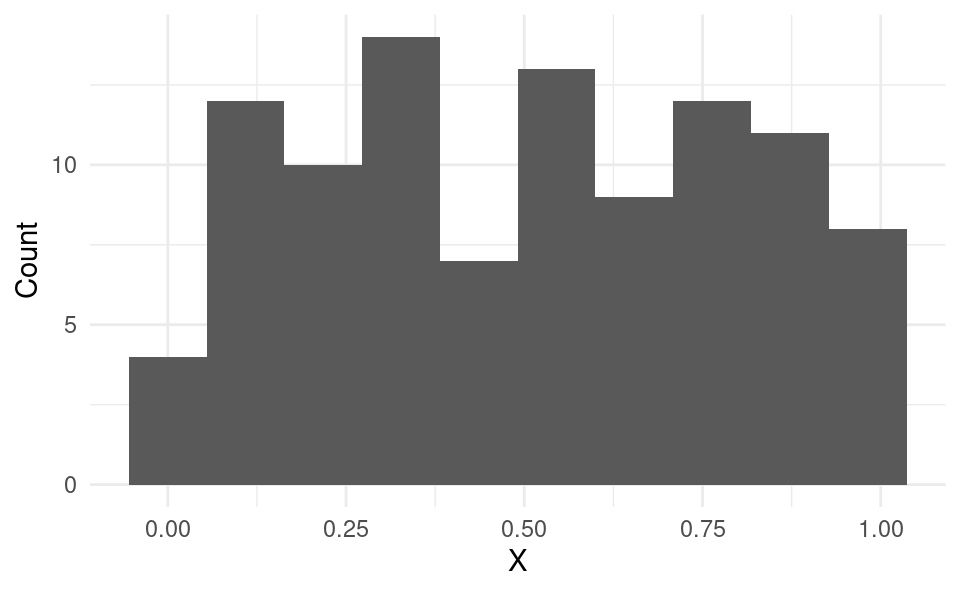
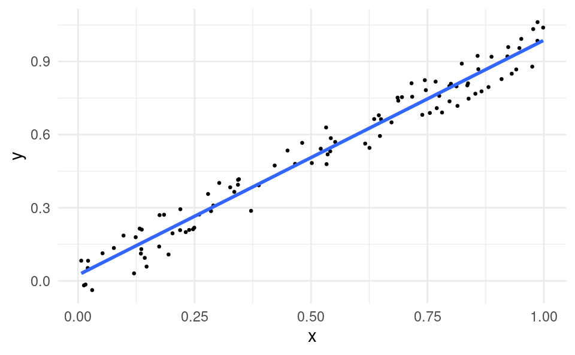
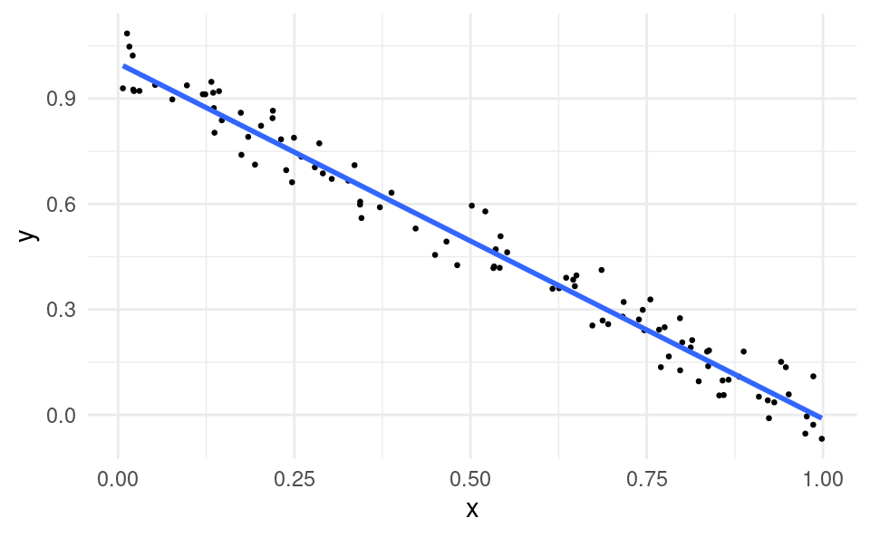
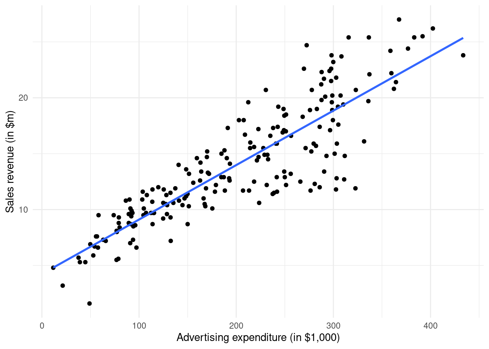

2Visualizing the Relationship between Two Variables
Consider a business that is interested in the relationship between the amount it spends on advertising and its sales revenue. This relationship is very important for the business, because if advertising is not very effective at generating more sales, the business could save a lot of money by reducing its advertising.
The business has data on the advertising spending and sales in different media markets (i.e. locations with different TV, radio stations and newspapers) where it sells its products. For example, in New York the business spends $3m on advertising and has revenues of $40m. In Los Angeles it spends $4m on advertising and has revenues of $45m.
In this chapter we will learn how this business can visually assess the relationship between advertising and sales.
In subsequent chapters, we will learn how this business can quantify this relationship, estimate the impact of advertising on sales, and predict the sales at different advertising levels.
Before we look at an example of real data on advertising and sales, we will first discuss the topic more generally.
2.1 Visualizing a Single Variable
With data on a single variable x, we often visually inspect the data using histograms:
Show code generating the plot below
# Set seed to get the same random draws each time:set.seed(30211)# Generate 100 random observations from the uniform distribution:df <-data.frame(x =runif(100, 0, 1))# Load the ggplot2 package:library(ggplot2)# Create a histogram of the data using ggplot:ggplot(df, aes(x)) +geom_histogram(bins =10) +xlab("X") +ylab("Count") +theme_minimal()

A histogram can tell us about the distribution of a single variable, such as:
The center of the distribution, i.e. median (here roughly 0.5).
The range of the data (here 0 and 1).
The spread of the distribution (here roughly uniformly spread over the range).
2.2 Scatter Plots
With data on two variables x and y, we use scatter plots to inspect the relationship. A scatter plot has a dot for each data point (x_i,y_i) for i=1,\dots,n on a Cartesian plane.
In this case, we say that x and y are positively linearly related.
If we draw a line through the cloud of points, the line has a positive slope:
Show code generating the plot below
ggplot(df, aes(x, y)) +geom_point(size =0.5) +geom_smooth(formula = y ~ x, method ="lm", se =FALSE) +theme_minimal()

If x was advertising and y was sales, the business observes that it tends to sell more in markets where it advertises more. Therefore advertising may have a positive impact on sales (whether advertising has a causal impact on sales is something we will discuss later).
2.4 Negative Relationship
Suppose the scatter plot instead looked like this:
Show code generating the plot below
df$y <-1+-df$x +runif(100, -0.1, 0.1)ggplot(df, aes(x, y)) +geom_point(size =0.5) +geom_smooth(formula = y ~ x, method ='lm', se =FALSE) +theme_minimal()

In this case:
When x is high, y is usualy low.
When x is low, y is usually high.
In this case, we say that x and y are negatively linearly related. The line through the cloud of points has a negative slope.
If x was advertising and y was sales, the business may conclude that advertising could be harmful to sales.
2.5 No Relationship
Two variables don’t always have to have a positive or negative relationship. Sometimes there is no clear relationship between variables. In this case, we say that x and y are unrelated.
Here is an example scatter plot of two variables that are unrelated:
If we were to draw a line through the cloud of points it would be (almost) flat.
2.6 R Example
We will now learn how to make a scatter plot with a dataset using R. For this we will use this dataset which was downloaded from kaggle.com, which is a website with many datasets used by data scientists. The dataset contains the advertising expenditure across TV, radio and newspapers (measured in thousands of dollars) and sales revenue (measured in millions of dollars) for a company in different media markets.
Following these steps:
Create a folder on your computer that you will use for datasets and R Scripts for this course (if you don’t have one already).
We can see that advertising and sales are positively related.
We can also customize the plot, changing the axis labels and adding a line through the points:
ggplot(df, aes(advertising, sales)) +geom_point() +geom_smooth(formula = y ~ x, method ="lm", se =FALSE) +xlab("Advertising expenditure (in $1,000)") +ylab("Sales revenue (in $m)") +theme_minimal()

The command creating the blue line through the points is geom_smooth(formula = y ~ x, method = "lm", se = FALSE). We will learn more about this command when we study the simple linear regression model.
2.7 Relationship Strength
Sometimes the relationship between x and y is stronger than with other pairs of variables. For example, the relationship between x and y is stronger in the left figure compared to the right figure:
What we would like to do is to be able to measure the strength of the linear relationship between x and y. That is what we will do in the next chapter.